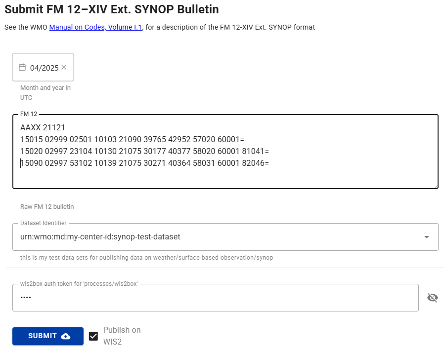

أدوات تحويل البيانات
نتائج التعلم
بنهاية هذه الجلسة العملية، ستكون قادرًا على:
- الوصول إلى أدوات سطر الأوامر ecCodes داخل حاوية wis2box-api
- استخدام أداة synop2bufr لتحويل تقارير SYNOP FM-12 إلى BUFR من سطر الأوامر
- تفعيل تحويل synop2bufr عبر wis2box-webapp
- استخدام أداة csv2bufr لتحويل بيانات CSV إلى BUFR من سطر الأوامر
مقدمة
يجب أن تلبي البيانات المنشورة على WIS2 المتطلبات والمعايير التي حددتها مختلف مجتمعات الخبراء في تخصصات/مجالات نظام الأرض. لتقليل العقبات أمام نشر البيانات لملاحظات السطح الأرضي، يوفر wis2box أدوات لتحويل البيانات إلى تنسيق BUFR. تتوفر هذه الأدوات عبر حاوية wis2box-api ويمكن استخدامها من سطر الأوامر لاختبار عملية تحويل البيانات.
التحويلات الرئيسية المدعومة حاليًا بواسطة wis2box هي تقارير SYNOP FM-12 إلى BUFR وبيانات CSV إلى BUFR. يتم دعم بيانات FM-12 لأنها لا تزال تستخدم وتتبادل على نطاق واسع في مجتمع WMO، بينما يتم دعم بيانات CSV للسماح بتعيين البيانات التي تنتجها محطات الأرصاد الجوية الآلية إلى تنسيق BUFR.
حول FM-12 SYNOP
تم الإبلاغ تاريخيًا عن تقارير الطقس السطحية من محطات السطح الأرضي كل ساعة أو في الساعات الرئيسية (00، 06، 12، و 18 بتوقيت UTC) والساعات الوسيطة (03، 09، 15، 21 بتوقيت UTC). قبل الانتقال إلى BUFR، تم ترميز هذه التقارير في نموذج رمز SYNOP FM-12 النصي العادي. بينما كان من المقرر أن يكتمل الانتقال إلى BUFR بحلول عام 2012، لا يزال عدد كبير من التقارير يتم تبادلها بتنسيق SYNOP FM-12 القديم. يمكن العثور على مزيد من المعلومات حول تنسيق FM-12 SYNOP في الدليل اليدوي لـ WMO على الرموز، المجلد I.1 (WMO-No. 306، المجلد I.1).
حول ecCodes
مكتبة ecCodes عبارة عن مجموعة من المكتبات البرمجية والأدوات المساعدة المصممة لفك تشفير وترميز البيانات الجوية بتنسيقات GRIB وBUFR. تم تطويره بواسطة المركز الأوروبي للتنبؤات الجوية المتوسطة المدى (ECMWF)، انظر وثائق ecCodes لمزيد من المعلومات.
يتضمن برنامج wis2box مكتبة ecCodes في صورة الأساس لحاوية wis2box-api. هذا يسمح للمستخدمين بالوصول إلى أدوات سطر الأوامر والمكتبات من داخل الحاوية. تُستخدم مكتبة ecCodes ضمن مجموعة wis2box لفك تشفير وترميز رسائل BUFR.
حول csv2bufr و synop2bufr
بالإضافة إلى ecCodes، يستخدم wis2box الوحدات النمطية بلغة Python التالية التي تعمل مع ecCodes لتحويل البيانات إلى تنسيق BUFR:
- synop2bufr: لدعم تنسيق SYNOP FM-12 التقليدي الذي استخدمه المراقبون اليدويون تقليديًا. تعتمد وحدة synop2bufr على بيانات تعريف المحطة الإضافية لترميز المعلمات الإضافية في ملف BUFR. انظر مستودع synop2bufr على GitHub
- csv2bufr: لتمكين تحويل بيانات CSV التي تنتجها محطات الأرصاد الجوية الآلية إلى تنسيق BUFR. تُستخدم وحدة csv2bufr لتحويل بيانات CSV إلى تنسيق BUFR باستخدام قالب تعيين يحدد كيفية تعيين بيانات CSV إلى تنسيق BUFR. انظر مستودع csv2bufr على GitHub
يمكن استخدام هذه الوحدات بشكل مستقل أو كجزء من مجموعة wis2box.
التحضير
المتطلبات الأساسية
- تأكد من أن wis2box الخاص بك قد تم تكوينه وبدء تشغيله
- تأكد من أنك قمت بإعداد مجموعة بيانات وقمت بتكوين محطة واحدة على الأقل في wis2box الخاص بك
- الاتصال بوسيط MQTT لنسخة wis2box الخاصة بك باستخدام MQTT Explorer
- افتح تطبيق الويب wis2box (
http://YOUR-HOST/wis2box-webapp) وتأكد من تسجيل الدخول - افتح لوحة تحكم Grafana لنسختك بالانتقال إلى
http://YOUR-HOST:3000
لكي تستخدم أدوات سطر الأوامر BUFR، ستحتاج إلى تسجيل الدخول إلى حاوية wis2box-api. ما لم يُذكر خلاف ذلك، يجب تشغيل جميع الأوامر على هذه الحاوية. ستحتاج أيضًا إلى أن يكون لديك MQTT Explorer مفتوحًا ومتصلاً بوسيطك.
أولاً، قم بالاتصال بجهاز الطالب الافتراضي الخاص بك عبر عميل SSH الخاص بك وانسخ مواد التمرين إلى حاوية wis2box-api:
docker cp ~/exercise-materials/data-conversion-exercises wis2box-api:/root
ثم قم بتسجيل الدخول إلى حاوية wis2box-api وانتقل إلى الدليل حيث توجد مواد التمرين:
cd ~/wis2box
python3 wis2box-ctl.py login wis2box-api
cd /root/data-conversion-exercises
تأكد من توفر الأدوات، بدءًا من ecCodes:
bufr_dump -V
يجب أن تحصل على الاستجابة التالية:
ecCodes Version 2.36.0
بعد ذلك، تحقق من إصدار synop2bufr:
synop2bufr --version
يجب أن تحصل على الاستجابة التالية:
synop2bufr, version 0.7.0
بعد ذلك، تحقق من csv2bufr:
csv2bufr --version
يجب أن تحصل على الاستجابة التالية:
csv2bufr, version 0.8.5
أدوات سطر الأوامر ecCodes
توفر مكتبة ecCodes المضمنة في حاوية wis2box-api عددًا من أدوات سطر الأوامر للعمل مع ملفات BUFR.
توضح التمارين التالية كيفية استخدام bufr_ls و bufr_dump لفحص محتوى ملف BUFR.
bufr_ls
في هذا التمرين الأول، ستستخدم الأمر bufr_ls لفحص رؤوس ملف BUFR وتحديد نوع محتويات الملف.
استخدم الأمر التالي لتشغيل bufr_ls على الملف bufr-cli-ex1.bufr4:
bufr_ls bufr-cli-ex1.bufr4
يجب أن ترى الإخراج التالي:
bufr-cli-ex1.bufr4
centre masterTablesVersionNumber localTablesVersionNumber typicalDate typicalTime numberOfSubsets
cnmc 29 0 20231002 000000 1
1 of 1 messages in bufr-cli-ex1.bufr4
1 of 1 total messages in 1 file
يمكن تمرير خيارات مختلفة إلى bufr_ls لتغيير كل من التنسيق وحقول الرأس المطبوعة.
Question
ما هو الأمر لإدراج الإخراج السابق بتنسيق JSON؟
يمكنك تشغيل الأمر bufr_ls مع العلم -h لرؤية الخيارات المتاحة.
انقر للكشف عن الإجابة
يمكنك تغيير تنسيق الإخراج إلى JSON باستخدام العلم -j، أي
bufr_ls -j bufr-cli-ex1.bufr4
عند تشغيله، يجب أن تحصل على الإخراج التالي:
{ "messages" : [
{
"centre": "cnmc",
"masterTablesVersionNumber": 29,
"localTablesVersionNumber": 0,
"typicalDate": 20231002,
"typicalTime": "000000",
"numberOfSubsets": 1
}
]}
يمثل الإخراج المطبوع قيم بعض مفاتيح الرأس في ملف BUFR.
بمفرده، هذه المعلومات ليست معلوماتية للغاية، حيث يتم توفير معلومات محدودة فقط حول محتويات الملف.
عند فحص ملف BUFR، غالبًا ما نرغب في تحديد نوع البيانات الموجودة في الملف والتاريخ/الوقت النموذجي للبيانات في الملف. يمكن سرد هذه المعلومات باستخدام العلم -p لتحديد الرؤوس المراد إخراجها. يمكن تضمين رؤوس متعددة باستخدام قائمة مفصولة بفواصل.
يمكنك استخدام الأمر التالي لسرد فئة البيانات والفئة الفرعية الدولية والتاريخ النموذجي والوقت:
bufr_ls -p dataCategory,internationalDataSubCategory,typicalDate,typicalTime -j bufr-cli-ex1.bufr4
Question
قم بتنفيذ الأمر السابق وتفسير الإخراج باستخدام جدول الرموز المشترك C-13 لتحديد فئة البيانات والفئة الفرعية.
ما نوع البيانات (فئة البيانات والفئة الفرعية) الموجودة في الملف؟ ما هو التاريخ والوقت النموذجي للبيانات؟
انقر للكشف عن الإجابة
{ "messages" : [
{
"dataCategory": 2,
"internationalDataSubCategory": 4,
"typicalDate": 20231002,
"typicalTime": "000000"
}
]}
من هذا، نرى أن:
- فئة البيانات هي 2، مما يشير إلى بيانات "القياسات العمودية (غير الأقمار الصناعية)".
- الفئة الفرعية الدولية هي 4، مما يشير إلى بيانات "تقارير درجة الحرارة/الرطوبة/الرياح العلوية من محطات الأرض الثابتة (TEMP)".
- التاريخ والوقت النموذجيان هما 2023-10-02 و00:00:00z، على التوالي.
bufr_dump
يمكن استخدام الأمر bufr_dump لسرد وفحص محتويات ملف BUFR، بما في ذلك البيانات نفسها.
جرب تشغيل الأمر bufr_dump على الملف الثاني bufr-cli-ex2.bufr4:
bufr_dump bufr-cli-ex2.bufr4
هذا ينتج JSON
يتطلب الوسيط --metadata ملف CSV باستخدام تنسيق محدد مسبقًا، ويتم توفير مثال عملي في الملف station_list.csv:
استخدم الأمر التالي لفحص محتويات ملف station_list.csv:
more station_list.csv
Question
كم عدد المحطات المدرجة في قائمة المحطات؟ ما هي معرفات محطات WIGOS للمحطات؟
انقر للكشف عن الإجابة
يظهر المخرجات التالية:
station_name,wigos_station_identifier,traditional_station_identifier,facility_type,latitude,longitude,elevation,barometer_height,territory_name,wmo_region
OCNA SUGATAG,0-20000-0-15015,15015,landFixed,47.7770616258,23.9404602638,503.0,504.0,ROU,europe
BOTOSANI,0-20000-0-15020,15020,landFixed,47.7356532437,26.6455501701,161.0,162.1,ROU,europe
يتوافق هذا مع بيانات المحطة لمحطتين: لمعرفات محطات WIGOS 0-20000-0-15015 و 0-20000-0-15020.
تحويل SYNOP إلى BUFR
بعد ذلك، استخدم الأمر التالي لتحويل رسالة FM-12 SYNOP إلى تنسيق BUFR:
synop2bufr data transform --metadata station_list.csv --output-dir ./ --year 2024 --month 09 synop_message.txt
Question
كم عدد ملفات BUFR التي تم إنشاؤها؟ ماذا يعني رسالة التحذير في المخرجات؟
انقر للكشف عن الإجابة
تظهر المخرجات التالية:
[WARNING] Station 15090 not found in station file
إذا قمت بفحص محتوى دليلك باستخدام الأمر ls -lh، يجب أن ترى تم إنشاء ملفين BUFR جديدين: WIGOS_0-20000-0-15015_20240921T120000.bufr4 و WIGOS_0-20000-0-15020_20240921T120000.bufr4.
تشير رسالة التحذير إلى أن المحطة ذات المعرف التقليدي للمحطة 15090 لم يتم العثور عليها في ملف قائمة المحطات station_list.csv. هذا يعني أن تقرير SYNOP لهذه المحطة لم يتم تحويله إلى تنسيق BUFR.
Question
تحقق من محتوى ملف BUFR WIGOS_0-20000-0-15015_20240921T120000.bufr4 باستخدام الأمر bufr_dump.
هل يمكنك التحقق من أن المعلومات المقدمة في ملف station_list.csv موجودة في ملف BUFR؟
انقر للكشف عن الإجابة
يمكنك استخدام الأمر التالي لفحص محتوى ملف BUFR:
bufr_dump -p WIGOS_0-20000-0-15015_20240921T120000.bufr4 | grep -v MISSING
ستلاحظ المخرجات التالية:
wigosIdentifierSeries=0
wigosIssuerOfIdentifier=20000
wigosIssueNumber=0
wigosLocalIdentifierCharacter="15015"
blockNumber=15
stationNumber=15
stationOrSiteName="OCNA SUGATAG"
stationType=1
year=2024
month=9
day=21
hour=12
minute=0
latitude=47.7771
longitude=23.9405
heightOfStationGroundAboveMeanSeaLevel=503
heightOfBarometerAboveMeanSeaLevel=504
لاحظ أن هذا يتضمن البيانات المقدمة من ملف station_list.csv.
نموذج SYNOP في wis2box-webapp
يتم استخدام وحدة synop2bufr أيضًا في wis2box-webapp لتحويل بيانات FM-12 SYNOP إلى تنسيق BUFR باستخدام نموذج إدخال قائم على الويب.
لتجربة هذا، انتقل إلى http://YOUR-HOST/wis2box-webapp وقم بتسجيل الدخول.
اختر SYNOP Form من القائمة على اليسار وانسخ محتويات ملف synop_message.txt:
AAXX 21121
15015 02999 02501 10103 21090 39765 42952 57020 60001=
15020 02997 23104 10130 21075 30177 40377 58020 60001 81041=
15090 02997 53102 10139 21075 30271 40364 58031 60001 82046=
في منطقة نص "SYNOP message":

Question
هل يمكنك إرسال النموذج؟ ما هو النتيجة؟
انقر للكشف عن الإجابة
تحتاج إلى اختيار مجموعة بيانات وتقديم الرمز الخاص بـ "processes/wis2box" الذي أنشأته في التمرين السابق لإرسال النموذج.
إذا قدمت رمزًا غير صالح، سترى:
- النتيجة: غير مصرح به، يرجى تقديم رمز 'processes/wis2box' صالح
إذا قدمت رمزًا صالحًا، سترى "تحذيرات: 3". انقر على "تحذيرات" لفتح القائمة المنسدلة التي ستظهر:
- المحطة 15015 لم يتم العثور عليها في ملف المحطة
- المحطة 15020 لم يتم العثور عليها في ملف المحطة
- المحطة 15090 لم يتم العثور عليها في ملف المحطة
لتحويل هذه البيانات إلى تنسيق BUFR، ستحتاج إلى تكوين المحطات المقابلة في wis2box الخاص بك والتأكد من أن المحطات مرتبطة بموضوع مجموعة البيانات الخاصة بك.
Note
في التمرين لـ ingesting-data-for-publication قمت بإدخال الملف "synop_202412030900.txt" وتم تحويله إلى تنسيق BUFR بواسطة وحدة synop2bufr.
في سير العمل الآلي في wis2box، يتم استخراج السنة والشهر تلقائيًا من اسم الملف واستخدامها لملء الوسيطات --year و --month المطلوبة بواسطة synop2bufr، بينما يتم استخراج بيانات المحطة تلقائيًا من تكوين المحطة في wis2box.
تحويل csv2bufr
Note
تأكد من أنك لا تزال مسجلاً الدخول في حاوية wis2box-api وفي الدليل /root/data-conversion-exercises، إذا خرجت من الحاوية في التمرين السابق، يمكنك تسجيل الدخول مرة أخرى على النحو التالي:
cd ~/wis2box
python3 wis2box-ctl.py login wis2box-api
cd /root/data-conversion-exercises
الآن دعونا ننظر في كيفية تحويل بيانات CSV إلى تنسيق BUFR باستخدام وحدة csv2bufr. تم تثبيت الوحدة في حاوية wis2box-api ويمكن استخدامها من سطر الأوامر على النحو التالي:
csv2bufr data transform \
--bufr-template <bufr-mapping-template> \
<input-csv-file>
يتم استخدام الوسيط --bufr-template لتحديد ملف قالب تعيين BUFR، الذي يوفر التعيين بين بيانات CSV الواردة وبيانات BUFR الناتجة المحددة في ملف JSON. تم تثبيت قوالب التعيين الافتراضية في الدليل /opt/csv2bufr/templates في حاوية wis2box-api.
مراجعة ملف CSV المثال
راجع محتوى ملف CSV المثال aws-example.csv:
more aws-example.csv
Question
كم عدد الصفوف الموجودة في ملف CSV؟ ما هو معرف محطة WIGOS للمحطات التي تقدم التقارير في ملف CSV؟
انقر للكشف عن الإجابة
تظهر المخرجات التالية:
wsi_series,wsi_issuer,wsi_issue_number,wsi_local,wmo_block_number,wmo_station_number,station_type,year,month,day,hour,minute,latitude,longitude,station_height_above_msl,barometer_height_above_msl,station_pressure,msl_pressure,geopotential_height,thermometer_height,air_temperature,dewpoint_temperature,relative_humidity,method_of_ground_state_measurement,ground_state,method_of_snow_depth_measurement,snow_depth,precipitation_intensity,anemometer_height,time_period_of_wind,wind_direction,wind_speed,maximum_wind_gust_direction_10_minutes,maximum_wind_gust_speed_10_minutes,maximum_wind_gust_direction_1_hour,maximum_wind_gust_speed_1_hour,maximum_wind_gust_direction_3_hours,maximum_wind_gust_speed_3_hours,rain_sensor_height,total_precipitation_1_hour,total_precipitation_3_hours,total_precipitation_6_hours,total_precipitation_12_hours,total_precipitation_24_hours
0,20000,0,60355,60,355,1,2024,3,31,1,0,47.77706163,23.94046026,503,504.43,100940,101040,1448,5,298.15,294.55,80,3,1,1,0,0.004,10,-10,30,3,30,5,40,9,20,11,2,4.7,5.3,7.9,9.5,11.4
0,20000,0,60355,60,355,1,2024,3,31,2,0,47.77706163,23.94046026,503,504.43,100940,101040,1448,5,25.,294.55,80,3,1,1,0,0.004,10,-10,30,3,30,5,40,9,20,11,2,4.7,5.3,7.9,9.5,11.4
0,20000,0,60355,60,355,1,2024,3,31,3,0,47.77706163,23.94046026,503,504.43,100940,101040,1448,5,298.15,294.55,80,3,1,1,0,0.004,10,-10,30,3,30,5,40,9,20,11,2,4.7,5.3,7.9,9.5,11.4
الصف الأول من ملف CSV يحتوي على رؤوس الأعمدة، والتي تستخدم لتحديد البيانات في كل عمود.
بعد صف الرأس، هناك 3 صفوف من البيانات، تمثل 3 ملاحظات جوية من نفس المحطة بمعرف محطة WIGOS 0-20000-0-60355 في ثلاث طوابع زمنية مختلفة 2024-03-31 01:00:00، 2024-03-31 02:00:00، و 2024-03-31 03:00:00.
مراجعة القالب aws
تتضمن wis2box-api مجموعة من قوالب تعيين BUFR المحددة مسبقًا والمثبتة في الدليل /opt/csv2bufr/templates.
تحقق من محتوى الدليل /opt/csv2bufr/templates:
ls /opt/csv2bufr/templates
CampbellAfrica-v1-template.json aws-template.json daycli-template.json
دعونا نتحقق من محتوى ملف aws-template.json:
cat /opt/csv2bufr/templates/aws-template.json
هذا يعيد ملف JSON كبير، يوفر التعيين لـ 43 عمود CSV.
Question
أي عمود CSV معين لمفتاح eccodes airTemperature؟ ما هي القيم الدنيا والقصوى الصالحة لهذا المفتاح؟
انقر للكشف عن الإجابة
باستخدام الأمر التالي لتصفية المخرجات:
cat /opt/csv2bufr/templates/aws-template.json | grep -i airTemperature
{"eccodes_key": "#1#airTemperature", "value": "data:air_temperature", "valid_min": "const:193.15", "valid_max": "const:333.15"},
القيمة التي سيتم ترميزها لمفتاح eccodes airTemperature ستؤخذ من البيانات في عمود CSV: air_temperature.
القيم الدنيا والقصوى لهذا المفتاح هي `193.15
لم تحصل على نتيجة، مما يشير إلى أن القيمة للمفتاح airTemperature مفقودة في ملف BUFR WIGOS_0-20000-0-60355_20240331T020000.bufr4. رفض الأمر csv2bufr ترميز القيمة 25.0 من بيانات CSV لأنها خارج النطاق الصحيح من 193.15 إلى 333.15 كما هو محدد في قالب التخطيط.
لاحظ أن تحويل CSV إلى BUFR باستخدام أحد قوالب التخطيط BUFR المحددة مسبقًا له قيود:
- يجب أن يكون ملف CSV بالتنسيق المحدد في قالب التخطيط، أي يجب أن تتطابق أسماء أعمدة CSV مع الأسماء المحددة في قالب التخطيط
- يمكنك فقط ترميز المفاتيح المحددة في قالب التخطيط
- فحوصات التحكم في الجودة محدودة بالفحوصات المحددة في قالب التخطيط
للحصول على معلومات حول كيفية إنشاء واستخدام قوالب تخطيط BUFR المخصصة، راجع التمرين العملي التالي csv2bufr-templates.
الخلاصة
تهانينا!
في هذه الجلسة العملية قد تعلمت:
- كيفية الوصول إلى أدوات سطر الأوامر ecCodes داخل حاوية wis2box-api
- كيفية استخدام
synop2bufrلتحويل تقارير FM-12 SYNOP إلى BUFR من سطر الأوامر - كيفية استخدام نموذج SYNOP في wis2box-webapp لتحويل تقارير FM-12 SYNOP إلى BUFR
- كيفية استخدام
csv2bufrلتحويل بيانات CSV إلى BUFR من سطر الأوامر